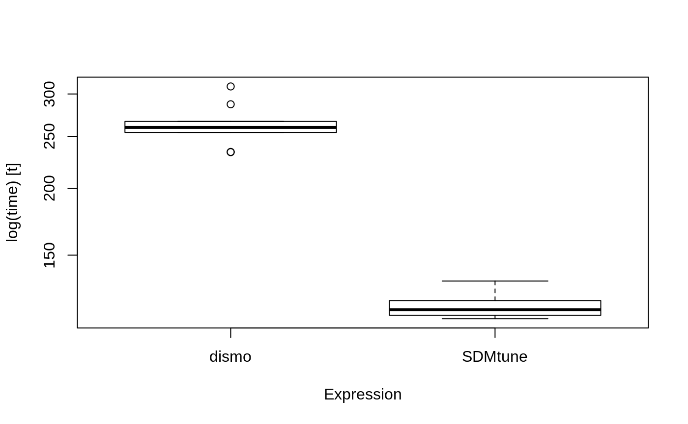

SDMtune provides a framework that facilitates preparing data for analysis, train and evaluate models. It also includes functions for data driven variable selection and model tuning and utilities to display results (at the moment it implements MaxEnt and Maxnet models). SDMtune uses its own script to predict MaxEnt models that performs much faster for large datasets than native predictions made using Java software. This reduces considerably the computation time when tuning the model, especially when optimizing the AICc.
Installation
You can get the latest stable version from CRAN:
install.packages("SDMtune")or the latest development version from github:
devtools::install_github("sgvignali/SDMtune")Example
Load required packages:
library(SDMtune)
#>
#> _____ ____ __ ___ __
#> / ___/ / __ \ / |/ // /_ __ __ ____ ___
#> \__ \ / / / // /|_/ // __// / / // __ \ / _ \
#> ___/ // /_/ // / / // /_ / /_/ // / / // __/
#> /____//_____//_/ /_/ \__/ \__,_//_/ /_/ \___/ version 0.0.0.9000
#>
#> To cite this package in publications type: citation("SDMtune").library(dismo)Obtain the data for the analysis, we use the dataset provided by dismopackage:
files <- list.files(path = paste(system.file(package = "dismo"), "/ex", sep = ""), pattern = "grd", full.names = T)
predictors <- stack(files)
file <- paste(system.file(package = "dismo"), "/ex/bradypus.csv", sep = "")
bradypus <- read.table(file, header = TRUE, sep = ",")
train_coords <- bradypus[, 2:3]
set.seed(25)
bg_coords <- randomPoints(predictors, 5000) # Extract random pointsPrepare the data for the analysis with SDMtune:
train <- prepareSWD(species = "Bradypus variegatus", coords = train_coords, env = predictors, categoricals = "biome")
#> Extracting predictor information for given locations...
bg <- prepareSWD(species = "Bradypus variegatus", coords = bg_coords, env = predictors, categoricals = "biome")
#> Extracting predictor information for given locations...
#> Warning: 5 locations are NA for some environmental variables, they will be discard!Train a MaxEnt model:
maxent_model <- train(method = "Maxent", presence = train, bg = bg, reg = 1, fc = "lqph")
#> Loading required namespace: rJavaTrain a Maxnet model:
maxnet_model <- train(method = "Maxnet", presence = train, bg = bg, reg = 1, fc = "lqph")Plot the ROC curve:
plotROC(maxent_model)
plotROC(maxnet_model)
Make prediction:
maxent_pred <- predict(maxent_model, data = predictors, type = "cloglog")maxnet_pred <- predict(maxnet_model, data = predictors, type = "cloglog")Plot prediction:
plotPred(maxent_pred, lt = "cloglog output")
plotPred(maxnet_pred, lt = "cloglog output")
Speed test
We test now the difference in computation speed between the predict function of the dismo package that uses the Java software and the predict function of the SDMtune package. We also test if the results are equivalent.
The following code creates a function to test the equivalence of the results:
my_check <- function(values) {
error <- 1e-7
max_error <- max(values(values[[1]]) - values(values[[2]]), na.rm = T)
max_error < error
}If the results diverge more than 1e-7 the test will fail. The next function converts an object of class Maxent into an object of class MaxEnt (dismo pkg):
me_model <- SDMmodel2MaxEnt(maxent_model)Run the test with 10 replicates:
library(microbenchmark)
res <- microbenchmark("dismo" = pred <- {predict(me_model, predictors)},
"SDMtune" = pred <- {predict(maxent_model, predictors, type = "cloglog")},
times = 10,
check = my_check)Print results:
res
#> Unit: milliseconds
#> expr min lq mean median uq max neval
#> dismo 234.4828 247.6949 260.0786 260.4636 270.1022 297.1218 10
#> SDMtune 114.5320 116.6716 122.9643 122.1407 130.5729 132.5317 10Plot results:
boxplot(res)
SDMtune is at almost two times faster than the native Java software. The improvement in speed difference is even greater for large datasets when using parallel computation (i.e. see details in predict function).